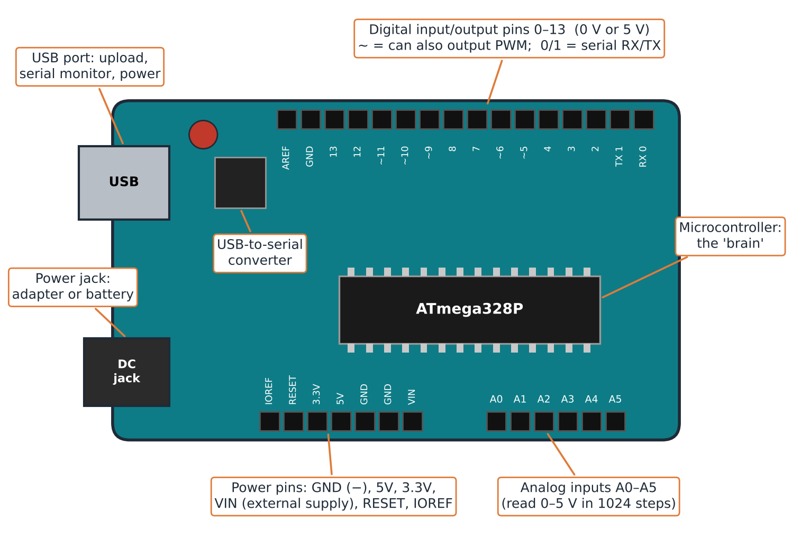
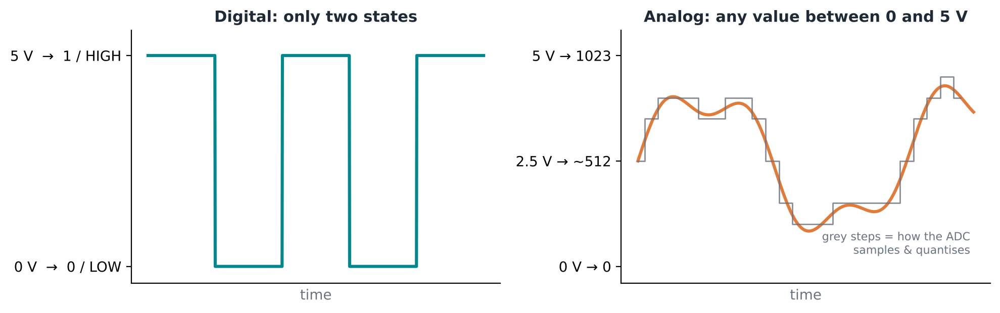
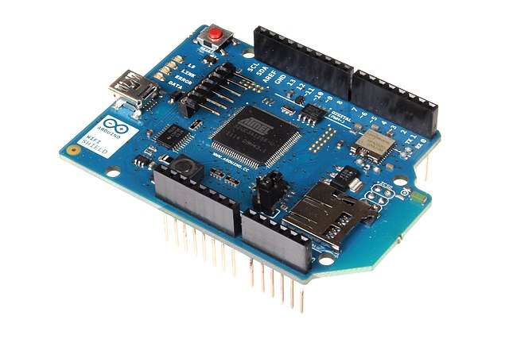
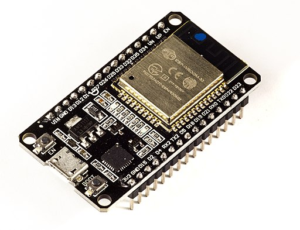

Meet the Arduino: brain, pins and power
Last updated on 2026-11-10 | Edit this page
Estimated time: 20 minutes
Overview
Questions
- What is a microcontroller development board?
- How does the board connect to a computer, to power and to the environment?
- What is the difference between digital and analog pins?
- How does Arduino compare with other boards such as the Raspberry Pi?
- How can an Arduino become part of the Internet of Things?
Objectives
- Identify the main parts of an Arduino board
- Distinguish digital, analog and power pins
- Compare Arduino with other microcontroller boards and with a single-board computer
Kit distribution and environment check: hand out the boards and USB cables, and check that every participant has the Arduino IDE installed and can select their board under Tools → Board as well as the right port.
The microcontroller development board
The Arduino is a microcontroller development board:
- The microcontroller is the large chip in the centre: the “brain” that runs our program.
- The board around it gives us access to the microcontroller’s pins, which is what makes it possible to program it and connect it to the world.
Arduinos are an open-source electronics platform, designed to teach people about electronics. They can be used to build electronic circuits that can be connected to the Internet, to serve as part of the Internet’s sensing. The microcontroller is an “integrated circuit” (or chip) that can be used together with other electronic components to control things such as motors and sensors. It is, in actual fact, a very small computer that can be programmed.

Photo: SparkFun Electronics from Boulder, USA, CC BY 2.0, via Wikimedia Commons.

The pins
| Pin group | Where | What it does |
|---|---|---|
| Digital (0–13) | One side of the board | Input or output, either 0 or 1 |
| Analog (A0–A5) | Opposite side | Read a range of voltages |
| Power | Next to the analog pins | Supply voltage and close the circuit |
Digital pins
A digital value is either 1 or 0. On this board that means 5 V or 0 V:
- as an output, the pin emits 0 V or 5 V;
- as an input, the microcontroller detects whether 5 V (1) or 0 V (0) arrives at the pin.
Numbering starts at 0: the digital pins go from 0 to 13.
Analog pins
Analog pins read a series of voltage values, for example anything between 0 and 5 V. They can tell the difference between, say, 1.2 V and 3.4 V.
Between 0 and 5 V there are theoretically infinite values, so what matters is the resolution. On the Arduino Uno the analog pins divide 0–5 V into 1024 steps (0 to 1023), so each step is about 5 mV.

Boards for learning, boards for products
There are many similar boards:
- Arduino Uno: the reference board we use to learn.
- Arduino Mega: same layout, more pins and more memory for larger programs.
- ESP32 and ESP8266: popular alternatives, often significantly cheaper than Arduinos and with onboard Wi-Fi.
- Arduino Nano and other small boards: good for a final product, but hard to learn on because the pin labels are tiny.
Full-size boards are very good for prototyping. Once you are confident, you move to a smaller form factor for the final product.
Connecting to the internet
The main thing to notice about the Arduino Uno is that it has no connectivity to the Internet. So even if we connect sensors to it, it cannot be part of the Internet of Things until it is connected to the Internet. However, one can purchase (or build) a Wi-Fi shield that fits on top of the Arduino. With the shield in place, you can program the Arduino to connect to the Internet and publish the data it retrieves from its sensors.

Photo: oomlout, CC BY-SA 2.0, via Wikimedia Commons.
There are now several models of Arduino with onboard Wi-Fi or Bluetooth. See the Arduino hardware page for the whole range. Often, boards from the ESP32 or ESP8266 series are chosen because they have onboard Wi-Fi and are significantly cheaper than Arduinos.

Photo: Ubahnverleih, CC0, via Wikimedia Commons.
What we need from a board
For the projects in this course, any board will do as long as it:
- is Wi-Fi enabled, and
- can be programmed with the Arduino IDE (Integrated Development Environment): the program in which we write code and upload it to the board.
Arduino vs Raspberry Pi
The Raspberry Pi did something similar but different: a system on a board. Besides the processor it has a GPU, RAM and storage, plus USB and LAN ports. It is a fully working, very powerful microcomputer, and it also has pins.
But its operating system is energy- and resource-demanding, and it loses precision in repetitive tasks that must happen at exactly the right time. An Arduino runs only our program, directly on the microcontroller.
The specialist and the professor
The Arduino is a very specialized worker with one tool. The Raspberry Pi is a professor who knows everything but is slower at doing one specific task.
Challenge: know your board
Take your board and find: the microcontroller, the USB port, the power port, a GND pin, digital pin 13 and analog pin A0.
Then: a sensor gives a voltage that changes gradually between 0 and 5 V. Which kind of pin do you connect it to?
An analog pin (A0–A5): it can read the whole range of voltages. A digital pin would only see 0 or 1.
With Arduino, the limit is your creativity. It is not as complicated or as “nerdy” as it looks: the aim is to realize that you can build whatever you need.
- An Arduino is a microcontroller (the brain) on a board that gives access to its pins.
- The USB port programs, communicates with and powers the board; a power port lets it run on its own.
- Digital pins are 0 or 1 (0 V or 5 V); analog pins read a range of voltages (0–1023 on the Uno).
- GND closes every circuit; 5V, 3.3V and VIN provide the positive supply.
- Arduino is a specialist: simpler, cheaper on energy and more precise in timing than a Raspberry Pi.
- An Arduino Uno needs a Wi-Fi shield to join the IoT; boards such as the ESP32 have Wi-Fi built in.